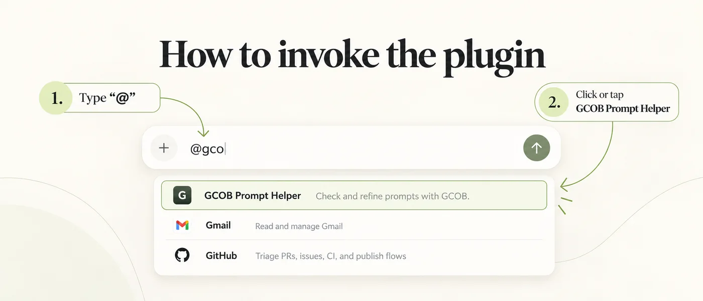
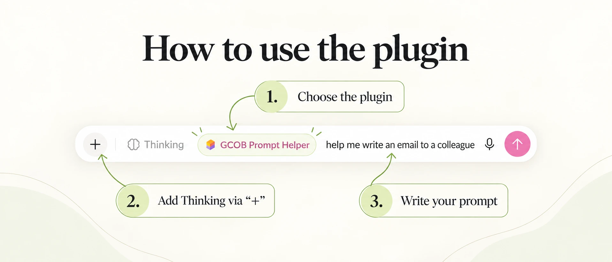

Bring your draft.
Start with your own words. GCOB recognizes meaning without requiring headings or a special template.
Your ChatGPT plugin for better prompts.
Turn a rough idea into a clear, well-structured prompt. GCOB Prompt Helper asks focused questions to clarify your goal, context, output and boundaries. Then choose: copy the improved prompt or run it.
ChatGPT access depends on your account and workspace permissions.
Start with your own words. GCOB recognizes meaning without requiring headings or a special template.
Answer one material question at a time. Choose a suggestion, skip the gap, or give your own answer.
After refinement, explicitly choose to output the prompt or run the task. Refinement alone does not start execution.
GCOB Prompt Helper 1.0.10 has been published in ChatGPT. Download the verified v1.0.10 ZIP package below.
Download plugin.zip (v1.0.10)Download plugin.zip using the release link above, and keep the archive intact.
Under Settings → Plugins, click Browse directory.
In the directory, open Add and select Upload plugin archive. Choose the downloaded plugin.zip and complete the upload. If validation reports a problem, save the error message and contact the publisher through Support.
Open GCOB Prompt Helper in your workspace’s Plugins directory and choose Install plugin or the plus (+) control if shown. If it is already installed, continue.
Who can import a ZIP? ZIP upload requires the upload option and appropriate permissions. In managed workspaces, an eligible owner or administrator may need to import it for you. Downloading a ZIP does not change ChatGPT permissions.
GCOB Prompt Helper is skill-only: no separate service connection, API key or GitHub account is needed.
Checked: 26 October 2026. Official ZIP upload instructions · Using a plugin.
Once installed, invoke the plugin directly in a new ChatGPT conversation.
Type @ in the message field. Optionally continue with gco to narrow the plugin list.
Click or tap GCOB Prompt Helper in the list. Then enter your draft prompt and send it.

The plugin then asks only the necessary clarification questions. Finally, choose whether to output the refined prompt or run it.
After choosing the plugin, you can enable Thinking before writing your prompt. This is a useful workflow for more involved requests.
In a new conversation, type @ and select GCOB Prompt Helper from the list.
Click + and select Thinking, if available in your interface.
For example, enter “help me write an email to a colleague” and send the message.

Note: Thinking is optional. Availability may vary with your account and the current ChatGPT interface.